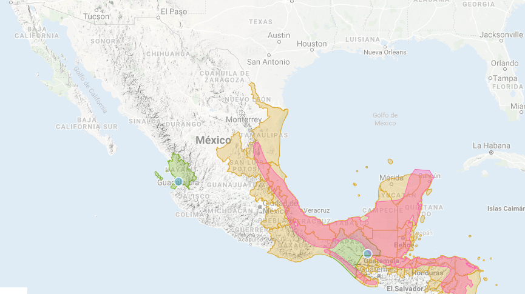
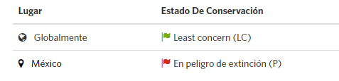

Descripción
El águila viuda (Spizaetus melanoleucus), también conocida como aguilucho blanquinegro,y águila tazor chica.
Mide de longitud 50 a 70 cm, pesando entre 600 y 900 g; el espécimen adulto cabeza, cuello, zona ventral y forro de alas blanco; lores, región orbital y cresta occipital corta negros.
Espalda negruzca, remeras grisáceas, claro en el envés con barras y puntas negras, cola gris clara y 4 bandas negras delgadas. Patas amarillas bien emplumadas, cera y ojos amarillos.
El joven con espalda parduzca grisácea.
Es solitario, se alimenta de mamíferos, reptiles y aves. Su nicho son áreas boscosas, en los bordes, gustando de zonas abiertas cercanas, planea avistando presas. Se posa en perchas.
Se arroja en picado al suelo. Se alimenta de aves (codorniz, perdiz, tucán), y mamíferos hasta el tamaño de un zorro, lagartijas grandes.
Hábitat
Es una especie de ave Accipitriforme de la familia Accipitridae que vive en América, desde México, América Central, Sudamérica hasta el norte de Argentina, desde el nivel del mar
hasta 1.500 msnm.

Situación actual

Chordata: Son un filo del reino animal caracterizado por la presencia de una cuerda dorsal o notocorda. Accipitriformes: Incluye la mayoría de las rapaces diurnas. Accipitrinae: Son una subfamilia de aves Falconiformes de la familia Accipitridae que incluye aves rapaces de tamaño mediano o pequeño.
 Aves en peligro de extinción
Aves en peligro de extinción